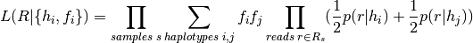

1. Introduction¶
Platypus is a tool for identifying small variants (SNPs and indels) in BAM files. This code is a fork of Platypus version 0.1.5, which is used in OpEx. If you are looking for the most recent version of Platypus, the code is available here. Platypus uses a haplotype-based approach to variant calling, which enables fast and accurate short indel calling.
2. Installation¶
Stable releases of Platypus can be downloaded from Github here
in either .zip or .tar.gz format. To unpack these run one of the following commands:
unzip Platypus.X.X.zip
or:
tar -xvzf Platypus.X.X.tar.gz
and then you can install Platypus with the following commands:
cd Platypus
./install.sh
Platypus uses virtualenv and pip to manage all its extra dependencies, which means that it will not clutter up your system by installing
things globally. Everthing it installs will go into a sub-directory in the Platypus directory (specifically, Platypus_X.X.X/env). If
you delete Platypus then everything it has installed will also be deleted. Once the installation script has finished successfully,
Platypus is ready for use.
2.1. Dependencies¶
To install and run Platypus v0.1.5 you will need Python (only version 2.7.X is currently supported), and Virtualenv.
3. Running Platypus¶
Once downloaded and correctly installed, Platypus can be run with the following command:
env/bin/platypus callVariants --bamFiles=input.bam --refFile=reference.fa --output=variant_calls.vcf
This is the simplest way to run Platypus, specifying only the names of the input BAM file and input reference files, and the output VCF file. Variant calls will then be outupt to a file called variant_calls.vcf.
- The input bam file should follow the BAM format and should contain mapped reads sorted by genomic coordinate. Platypus has been tested using BAM files produced by Stampy and BWA, but should also work with other short read aligners. The BAM index file (.bai) should also be present in the same directory; this can be created using Samtools.
4. Command Line Options¶
Platypus has a large number of configuration options that can be specified on the command-line. Most of these can be ignored, as they take sensible default values and are already configured for optimal results. Below is a full descripton of all configuration options.
4.1. Basic options¶
| Option | Type | Default Value | Example Usage | Description |
|---|---|---|---|---|
| -h –help | NA | NA | –help | If this option is set then Platypus will print a help message and then exit |
| –bamFiles | Comma-separated list of strings | None | –bamFiles=test1.bam,test2.bam | A list of BAM file names. All the specified BAM files will be searched for variants. The output will go into a single VCF file |
| –refFile | String | None | –refFile=human_37.fa | Name of the input reference FASTA file. This file must be indexed (using Samtools faidx for example) and must contain the same reference sequence that was used to map the reads in the input BAM file(s) |
| -o –output | String | AllVariants.vcf | –output=variant_calls.vcf | Name of the output VCF file |
| –regions | Comma-separated list of strings or the name of a text file | None | –regions=chr1:1000-2000,chr2:2000-4000 | Platypus will produce variant calls only in the specified regions. See Specifying calling regions for a more detailed description |
| –verbosity | Integer from 0 to 3 | 2 | –verbosity=3 | Sets the level of output logging for Platypus. Increase this value for more verbose log output |
| –logFileName | String | log.txt | –logFileName=platypus_log_file.txt | Name of the output log file. |
| –nCPU | Integer | 1 | –nCPU=3 | Number of processes to use for variant calling. If > 1 then Platypus will run in multiple processes and merge the VCF files into one file at the end |
4.2. BAM Data processing and filtering options¶
Platypus does not necessarily use every read, in the BAM for variant calling. Whole reads may be filtered out based on various quality criteria, and segments of individual reads may also be filtered. The table below gives a summary of the configuration options that may be used to control read-level filtering.
| Option | Type | Default Value | Example Usage | Description |
|---|---|---|---|---|
| –processRegionSize | Integer | 30,000,000 | –processRegionSize=10000000 | Platypus breaks up the genome into regions of this size and processes them in parallel (if nCPU > 1) or consecutively (if nCPU == 1) |
| –bufferSize | Integer | 1,000,000 | –bufferSize=100000 | The maximum size of region (per process, and as a genomic interval) that Platypus will read into memory at any point. This can be used to control memory usage |
| –maxReads | Integer | 5,000,000 | –maxReads=100000 | This sets an upper limit on the amount of data that Platypus will try to process in one region. If the number of reads in a region of bufferSize is larger than this then Platypus will skip the region. This option can be used, in conjunction with bufferSize to control memory usage. |
| –maxBadQualBases | Integer | 20 | –maxBadQualBases=10 | If a read has > this number of bases with quality < 20 then it will be filtered out and not used for variant calling. |
| –minGoodQualBases | Integer | 20 | –minGoodQualBases=10 | If a read has < this number of bases with quality >= 20 then it will be filtered out and not used for variant calling. |
4.3. Variant calling options¶
| Option | Type | Default Value | Example Usage | Description |
|---|---|---|---|---|
| –genSNPs | Boolean | 1 (True) | –genSNPs=1 | If set to 1, Platypus will call SNPs. If set to 0 Platypus will not call SNPs |
| –genIndels | Boolean | 1 (True) | –genIndels=1 | If set to 1, Platypus will call Indels. If set to 0 Platypus will not call Indels |
| –minBaseQual | Integer | 20 | –minBaseQual=25 | Only bases with base quality >= this value will be examined when generating the initial list of SNP candidates |
| –minMapQual | Integer | 20 | –minMapQual=25 | Only bases with base quality >= this value will be examined when generating the initial list of SNP candidates |
| –maxVariants | Integer | 8 | –maxVariants=12 | A limit on the number of variant candidates that Platypus will consider in any single window. For more detals see Filtering variant candidates for more details |
| –maxHaplotypes | Integer | 256 | –maxHaplotypes=500 | A limit on the number of haplotpyes that Platypus will consider in any single window. For more details see Generating haplotypes for more details |
| –minReads | Integer | 1 | –minReads=10 | There must be >= minReads reads with mapping quality >= minMapQual supporting any variant for it to be considered. For SNPs the base qualities must be >= minBaseQual |
| –maxSize | Integer | 250 | –maxSize=250 | An upper limit on the size of indels that Platypus will call |
| –getVariantsFromBAMs | Boolean | 1 | –getVariantsFromBAMs=1 | If set to 0 then Playpus will not scan the BAM for variant candidates. This only makes sense if there are candidates coming from elsewhere, e.g. an input VCF of variants |
| –strandFilter | Boolean | 0 | –strandFilter=1 | If set to 1 then Platypus will require at least 1 read on each of the forward and reverse strands in order to consider a variant candidate |
| –minFlank | Integer | 3 | –minFlank=10 | Any indel candidate in the BAM must have >= minFlank reference-matching bases on either side of it to be considered |
4.4. Variant filtering options¶
The VCF output of Platypus contains a number of metrics and flags that can be used to filter the variant calls. The following options can be used to control the filters.
| Option | Type | Default Value | Example Usage | Description |
|---|---|---|---|---|
| –minPosterior | Float | 5 | –minPosterior=10 | Only variant calls wth a posterior / QUAL value >= this will be output to the VCF. This value is a Phred score. |
| –sbThreshold | Float | 0.01 | –sbThreshold=0.02 | P-value threshold for the strand-bias filter. Variants with a strand-bias p-value < this threshold will be flagged as sb in the VCF filter column. See Filtering variant candidatess for more details. |
| –abThreshold | Float | 0.001 | –abThreshold=0.002 | P-value threshold for the allele-bias filter. Variants with an allele-bias p-value < this threshold will be flagged as ab in the VCF filter column. See Filtering variant candidates for more details. |
| –minPosterior | Float | 5 | –minPosterior=10 | Only variant calls wth a posterior / QUAL value >= this will be output to the VCF. This value is a Phred score. |
| –badReadsWindow | Integer | 11 | –badReadsWindow=7 | Size of window around variant location to check for low quality bases. If the median minimum quality in this window is < badReadsThreshold then the variant will be filtered with the flag ‘badReads’ in the output VCF. See Filtering variant candidates for more details. |
| –badReadsThreshold | Integer | 15 | –badReadsThreshold=20 | Threshold for the bad reads filter. See Filtering variant candidates for more details. |
4.5. Miscellaneous options¶
| Option | Type | Default Value | Example Usage | Description |
|---|---|---|---|---|
| –source | String | None | –source=thousand_genomes_snps.vcf.gz | Name of an input VCF file to be used as a source of variant candidates. See Supplying variant candidates from VCF for more details |
| –freqAsPrior | Boolean | 0 | –freqAsPrior=1 | Must be used in conjunction with –source. If this is set to 1 then Platypus will use the AF tag in the input VCF as a prior on the variant. See :ref:Supplying variant candidates from VCF<supplying_variant_candidates_from_vcf>` for more details |
| –parseNCBI | Boolean | 0 | –parseNCBI=1 | This must be set to 1 if the reference file has sequence names in the NCBI format |
| –printVarsAndExit | Boolean | 0 | –printVarsAndExit=1 | If set to 1, Platypus will simply print a list of all variant candidates in the calling regions, and exit without making calls |
4.6. Deprecated command-line options¶
The following command-line options are deprecated, and should not be used.
| Option | Description |
|---|---|
| -n –nIndividuals | Was used to set the number of individuals in the input BAM files. Now each BAM file is assumed to contain data from only one individual |
| -p –ploidy | Was used to set the ploidy of the samples in the BAM files. Now this is fixed at 2. |
| –dataType | Was used to distinguish between individual, trio and pooled sequencing datasets |
| –maxReadLength | Was used to limit the size of reads that Platypus would process |
| –labels | Was used to specify how to convert BAM file names into the VCF sample column headers |
| –callOnlyIndels | If set to 1 then Platypus will only call variants in regions where there are indel candidates |
4.7. Specifying calling regions¶
It often useful to call variants on only a subset of the genome, e.g. a particular gene or exon. Platypus supports this mode through the –regions option. This option can be used in several ways:
- A comma-separated list of chromosome:start-end coordinates can be given, e.g. –regions=chr1:0-100,chr2:300-400,chrX:1000-20000. Platypus will search for variants in just these regions
- A comma-separated list of chromosomes can be given, e.g. –regions=chr1,chr2,chr20,chrY. Platypus will search for variants in just these chromosomes, and the lengths of the chromosomes will be taken from either the BAM file header or the reference FASTA file index
- A text file name may be specified, e.g. –regions=my_regions.txt. This file must contain only lines with the format chrom:start-end, e.g. chr1:1000-20000 with one region per line.
- If no regions are specified then Platypus will call variants across the whole genome. It will check the BAM header file and the reference FASTA file to determine the list of chromosomes and other contigs, as well as their lengths
5. Description of Variant Calling Algorithm¶
Platypus is designed to call variants on BAM files containing aligned reads generated from the Illumina GAII and Hi-Seq sequencing machines. Platypus calls variants in small haplotype blocks or windows, identifying SNPs and short indels simultaneously. The variant calling algorithm has the following main parts:
- Read processing
- Construction of variant candidates
- Windowing
- Haplotype generation
- Haplotype likelihood computation
- Haplotype frequency estimation
- Calling variants and genotypes
- Variant filtering
5.1. Read processing¶
Platypus takes as input one or more BAM files containing reads mapped to a reference genome, and an indexed FASTA file of the reference sequence. The BAM data are processed in chunks, sorted by the mapping position in the reference sequence of the reads. To reduce disk load the algorithm first loads all reads mapping to a fairly large region (default 1 mb; option bufferSize) into memory. Each BAM file is assumed to contain a single sample. While this approach works well for modest numbers of samples, it does not scale to large sample sizes (~1000 and up). The reason is that in order to fit all reads into memory, the region size needs to shrink as the sample size increases, increasing the number of region load operations.
After the reads are read into memory, a de‐duplication step removes reads that likely represent PCR copies of the same molecule, as base‐calling or indel errors in these may otherwise be mistaken for real variants. In addition, reads having fewer than 20 high quality bases (option minGoodQualBases), defined as those with a base quality score of at least 20 (option minBaseQual), are also discarded.
By default, reads that have low mapping quality scores (below 20; option minMapQual) are also discarded.
5.2. Construction of candidate variants¶
Two sources contribute to the list of candidate variants that are considered by the algorithm:
- Single‐nucleotide variants (SNVs) and short indels as reported in the CIGAR string and read sequences of the BAM files
- Any auxiliary variants provided from a (bgzip‐compressed, tabix‐indexed) VCF file.
Each of these sources is optional and controlled by the user (options: getVariantsFromBAMs; source); e.g. Platypus can be made to genotype only a list of specific alleles fed from a source VCF, while for a normal variant calling run, only variants from read alignments are used. Candidate indel variants that occur closer than 3 bp (configurable with option minFlank) to either of the read’s edges are discarded.
5.2.1. Candidate variants from VCF files¶
When a VCF file is provided as input, Platypus collects all variants listed in it, independent of genotype or filter status, and adds these to the list of candidate variants.
5.2.2. Priors on candidates¶
Platypus assigns priors at the candidate variant generation stage. The following priors are used by default:
- SNPs:
- Insertions
- Deletions:
5.3. Windowing¶
Platypus calls variants in small genomic windows. This section explains how these windows are constructed. First, any length‐changing variant is left‐aligned, and the set of candidates is filtered for low support. Candidates are kept if they are supported by at least 2 (option: minReads) reads with bases of quality 20 (option: minBaseQual) or above. Next, the candidates are sorted by position, and grouped by position. Groups are subsequently merged if they contain overlapping variants.
If the window contains more than 8 variants, Platypus prioritizes candidates by read support. In this way the maximum number of candidate variants considered per window is limited to 8 (option maxVariants). For certain designs, including those with large numbers of samples, and those targeting highly diverse regions, it will be beneficial to increase this threshold.
5.4. Haplotype generation¶
The most straightforward way to build haplotypes out of a set of candidate variants is to generate all combinations of candidate variants, and apply each set of variants to the reference sequence. For n variants, this results in  haplotypes (disregarding excluded combinations due to overlap). For small n this is acceptable, but the procedure results in excessive runtime in a minority of windows with many candidate variants. To address this, we implemented an alternative stepwise prioritization algorithm that is applied for larger n, and that keeps the number of haplotypes that need to be considered under control. With default settings, which allows a maximum of 8 variants in a single window, this algorithm is not used, and all possible combinations are considered.
haplotypes (disregarding excluded combinations due to overlap). For small n this is acceptable, but the procedure results in excessive runtime in a minority of windows with many candidate variants. To address this, we implemented an alternative stepwise prioritization algorithm that is applied for larger n, and that keeps the number of haplotypes that need to be considered under control. With default settings, which allows a maximum of 8 variants in a single window, this algorithm is not used, and all possible combinations are considered.
If the total number of haplotypes that must be considered exceeds a specified limit (the default is 256, or ), Platypus constructs all the single variant haplotypes, and computes posterior probabilities for each variant using the normal variant calling model described below. Because only single-variant haplotypes are considered this is much faster than the full model, but also less accurate. The variants are then sorted by posterior, and the top 8 are then used in the full calculation. In the event of duplicate haplotypes being produced, i.e. the same exact sequence is produced by more than one combination of variants, the combination with the highest overall prior probability is used (the prior probability of the haplotype is the product of the prior probabilities of the variants that make up the haplotype).
5.5. Calculation of haplotype likelihoods¶
The first step in the calculation of the genotype likelihood, is the calculation of the haplotype likelihood, or the probability of the reads given the haplotype: , where r and h denote read and haplotype respectively. This probability is calculated, for each read, by aligning a read to the haplotype sequence, using a modified (and extrenely efficient) version of the Needleman-Wunsch alignment algorithm.
The alignment algorithm includes models for base mismatches and indel errors. Mismatches are scored by adding up the Phred quality scores of mismatching bases. The likelihood of indel errors is modeled using position‐dependent gap‐opening Phred scores. These are pre‐ calculated based on the propensity of indel errors to occur given the (reference) sequence context. This model, the same as is used by Dindel2 is a simplified version of the model for the indel prior, and considers homopolymers only, rather than homopolymers and more general tandem repeats. Note that the alignment algorithm does not model SNPs and indel mutations, since the haplotype h represents the hypothesized true sequence.
5.6. Estimation of haplotype frequencies¶
After is calculated for all combinations of reads and haplotypes, an Expectation‐Maximization (EM) algorithm is run to estimate the frequency of each haplotype, under a diploid genotype model:

Here, denotes the frequency of haplotype in the population; is the number of alleles considered,  and denote the set of all reads, and reads from sample
and denote the set of all reads, and reads from sample  respectively, and the sum over haplotypes extends over all ordered pairs (i,j), i.e. genotypes. In the formula above we implicitly integrate out the latent variable that determines the two haplotypes of the sample s. This formula holds for both heterozygous and homozygous genotypes.
respectively, and the sum over haplotypes extends over all ordered pairs (i,j), i.e. genotypes. In the formula above we implicitly integrate out the latent variable that determines the two haplotypes of the sample s. This formula holds for both heterozygous and homozygous genotypes.
5.7. Calling variants and genotypes¶
The posterior support for any variant is computed by comparing the likelihood of the data given all haplotypes, and the likelihood given only those haplotypes that do not include a particular variant, i.e., the likelihood in a nested model where the frequencies of haplotypes that do not include the variant are fixed to 0. For the latter model, the frequencies not fixed to 0 are scaled up to account for the estimated frequency of the excluded haplotypes:
where is the prior probability of observing variant , is the set of haplotype indices for which does not contain , and _math:F_v=sum_{iin I_v}f_i. The likelihood of reads given haplotypes and their frequencies is computed as
Variants are called when their posterior support exceeds a threshold (by default Phred score 5), using these frequencies as a prior.
Genotype likelihoods for a particular variant are calculated by marginalizing over the genotypes at other variant sites within the window being considered. The best likelihood is reported as a genotype call, and the posterior for this call is calculated in the usual way (as prior times likelihood of the call, divided by the sum of prior times likelihood over all genotypes considered), and reported as a “genotype quality Phred score” (the Phred‐scaled probability of the call being wrong, or 10 times negative 10‐log of one minus the posterior) in the per‐sample GQ field. Using the maximum‐likelihood estimates of haplotype frequencies estimated from the data itself as priors when calling haplotypes and variants works well, but tends to bias genotype calls particularly for small pedigrees and single samples. To address this, we replace the estimated frequencies by a flat prior when calling genotypes if the number of samples is below 25. This also affects the reported genotype quality, but does not affect the reported genotype likelihoods.
5.8. Filtering¶
Platypus will only output variants with a phred-scaled posterior probability > 5. In addition, a number of soft filters are applied on a per‐variant basis, with corresponding flags in the FILTER column of the output VCF.:
5.8.1. Allele bias (ab)¶
The allele bias filter identifies variants that show support in too few reads compared to the expectation under heterozygous segregation in a diploid organism. Specifically, it rejects variants if (i) the fraction of reads supporting the variant allele is less than the minimum of 0.5 and (ii) the p value under a binomial model less than 0.001.
5.8.2. Strand bias (sb)¶
The strand bias filter identifies variants whose support is skewed in terms of reads mapping to the forward and reverse strands, relative to the distribution seen in all reads. We use the distribution seen overall, rather than say a binomial distribution centered around a fraction of 0.5, because certain experimental designs can give rise to bona fide strand biases. Examples include exon capture, and mapping biases due to the existence of an anchoring point to one end of the sequence, but not the other. Specifically, the reads supporting the variant are tested against a binomial distribution where the mean of the distribution equals the ratio observed in all reads. Variants are accepted if the p value exceeds 0.001.
5.8.3. Bad reads (badReads)¶
This filter triggers when across reads supporting a variant, the median of the minimum base quality close to the focal site (default 7 bp either side, configurable using ‐‐badReadsWindow) is too low (default 15 or less, configurable using ‐‐badReadsThreshold); this identifies systematic local sequencing issues causing an excess of read errors, which are not always accurately reflected in the read quality scores. It also triggers when more than a fraction of reads are filtered out for the candidate generation stage; the default for this is 0.7 (configurable using – filteredReadsFrac).
5.8.4. Homopolymers filter (hp10)¶
Polymerase slippage in low‐complexity regions are a known cause of spurious indel calls, and in the alignment model we account for a higher incidence of these errors. However, in certain instances, particularly in long homopolymers, our error model does not compensate for the high rate of sequencing errors, and spurious indel calls may result. To avoid a high false-positive rate in such regions, Platypus flags any varian call as suspicious if the haplotype containing the variant has a homopolymer of length 10 or greater that crosses the variant site.